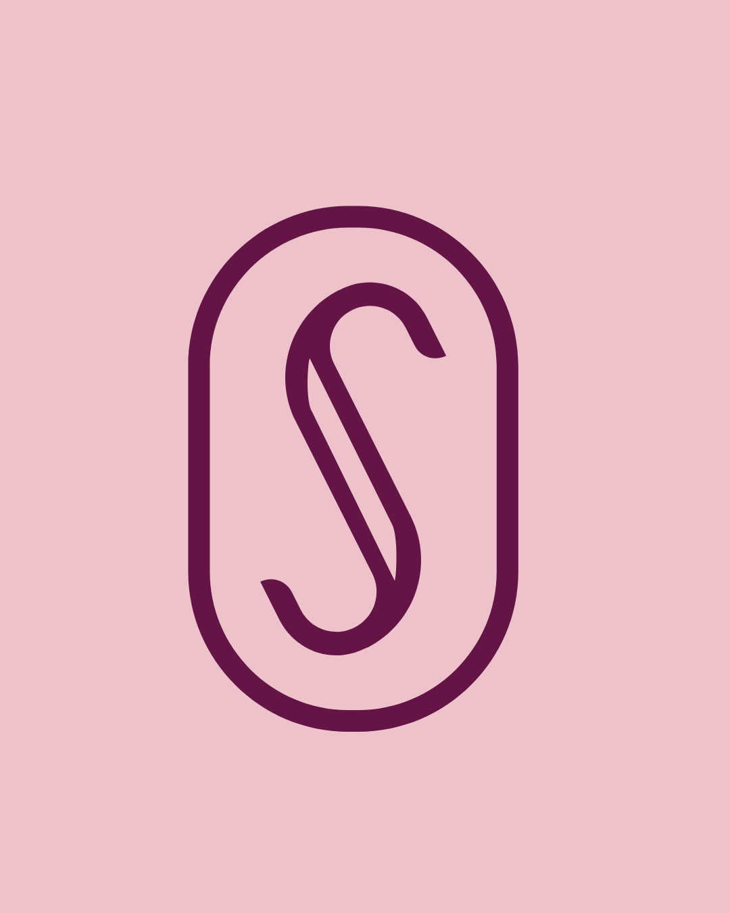
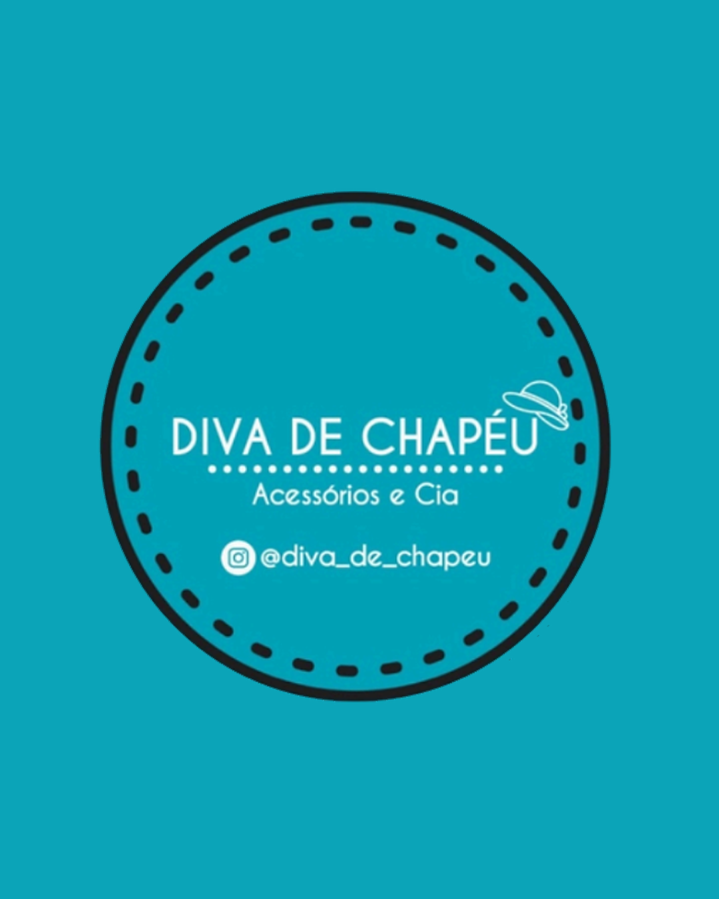

BE
Back-End
API
REST
Fortaleza, CE · disponível para trabalho
Olá, eu sou
Desenvolvedor Back-End
Estudante de Análise e Desenvolvimento de Sistemas, hoje construindo e mantendo produtos reais como a Salonia e a Diva de Chapéu. Foco em Node.js, APIs REST e banco de dados.
Sobre
Sou estudante de Análise e Desenvolvimento de Sistemas na Unifametro e estou construindo minha carreira com foco em desenvolvimento back-end.
Gosto de entender o problema antes de escrever o código. Nos meus projetos, participo do planejamento, modelo o banco de dados, desenvolvo APIs e conecto o back-end a interfaces funcionais.
Atualmente busco minha primeira oportunidade na área para aprender com uma equipe, contribuir com projetos reais e continuar evoluindo como desenvolvedor.
Stack
Minha base atual para criar aplicações web, APIs, integrações e persistência de dados.
Projetos
Dois produtos que planejei e desenvolvi para resolver problemas reais.

Abrir projetoProduto próprio · Em desenvolvimento
Plataforma de agendamento e gestão para profissionais da beleza, com painel administrativo, agenda pública e estrutura multiempresa.

Abrir projetoProjeto para cliente · Publicado
Loja de acessórios com catálogo dinâmico, carrinho, cálculo de frete e finalização do pedido diretamente pelo WhatsApp.
Formação
Unifametro · 2º semestre
Node.js, APIs REST, PostgreSQL, Git e GitHub
Trabalho em desenvolvimento, suporte ou áreas relacionadas
Contato
Vamos conversar e descobrir o que podemos construir juntos.